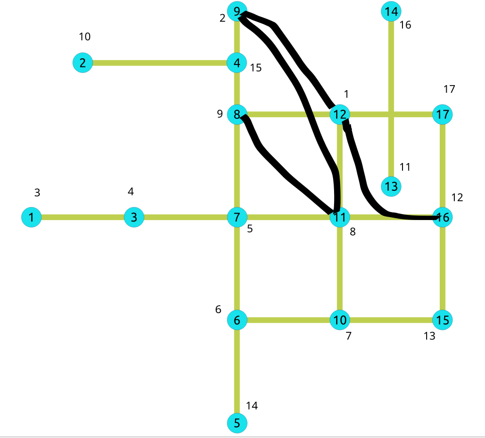

pgr_contractionHierarchies - 实验性¶
pgr_contractionHierarchies — 根据收缩层级方法执行图收缩，并返回收缩后的顶点和生成的快捷边。
可用性
Version 3.8.0
新 实验性 函数
描述¶
收缩层次法是从顶点的初始顺序出发建立层次顺序的，在最短路径算法的标签固定处理过程中优先考虑某些顶点。此外，收缩层次算法还能在图中添加捷径边，帮助最短路径算法遵循所创建的层次图结构。
层次结构的原理是将属于长距离网络（例如公路网络中的高速公路）的顶点置于高优先级，而将属于短距离网络（例如公路网络中的主干道或次干路）的节点置于低优先级。
收缩层次结构算法的假设是，已经存在一个有价值的顶点顺序，用于初始化收缩过程。由于大多数情况下没有有价值的初始节点排序，因此我们使用顶点 ID 给出的顺序。然后，在这个首序的基础上进行收缩处理，得到最终的层次结构。
其基本原理是将顶点按其收缩吸引力的估计值排序，保留在优先队列中。实施案例中使用的度量称为 边差 ，相当于顶点收缩产生的捷径数量与收缩前图中附带边的数量之差 (#shortcuts - #incident edges).
最后，在使用类似 Dijkstra 的双向算法时，目的是减少图中已探索的部分。顶点顺序用于为定向搜索提供信息。搜索过程不会失去最优性。
为收缩寻找最佳顶点排序是一个难题。然而，根据 Geisberger 等人的研究 [2]，非常简单的局部启发式方法就能很好地解决这个问题。这种方法的原理是先验地估算 边差 的值，只有当新的度量值使位于队列顶端的节点保持在队列顶端时，才对其进行收缩。否则，它就会被重新插入队列，位于与新度量值相对应的正确位置。
这个过程是在只有边的成本为正值的图形上完成的。
需要注意的是，此函数不会删除任何顶点。最终图中保留了原有的所有顶点，但新增了一些对应于快捷边的边。为构建这些快捷边而收缩的顶点也会被保留，并按层级顺序排列。
至于其他收缩方法，它不会返回完整的收缩图，只会返回变化。它们有两种类型：
增加了带有负标识符的快捷边；
带有顺序的收缩节点。
 Boost 图内部
Boost 图内部
签名¶
总结
pgr_contractionHierarchies 函数具有以下签名：
[directed, forbidden](type, id, contracted_vertices, source, target, cost)参数¶
参数 |
类型 |
描述 |
|---|---|---|
|
Edges SQL 如下所述。 |
可选参数¶
列 |
类型 |
默认 |
描述 |
|---|---|---|---|
|
|
|
|
收缩层级的可选参数¶
列 |
类型 |
默认 |
描述 |
|---|---|---|---|
|
|
Empty |
禁止收缩的顶点标识符。 |
|
|
\(1\) |
如果图是有向的，则为 True，否则为 False。 |
内部查询¶
Edges SQL¶
列 |
类型 |
默认 |
描述 |
|---|---|---|---|
|
ANY-INTEGER |
边的标识符。 |
|
|
ANY-INTEGER |
边的第一个端点顶点的标识符。 |
|
|
ANY-INTEGER |
边的第二个端点顶点的标识符。 |
|
|
ANY-NUMERICAL |
edge ( |
|
|
ANY-NUMERICAL |
-1 |
边(
|
其中：
- ANY-INTEGER:
SMALLINT,INTEGER,BIGINT- ANY-NUMERICAL:
SMALLINT,INTEGER,BIGINT,REAL,FLOAT
结果列¶
返回集合 (type, id, contracted_vertices, source, target, cost)
该函数返回多行（每个顶点一行，每创建一条快捷边一行）。行的列数为：
列 |
类型 |
描述 |
|---|---|---|
|
|
|
|
|
此列中的所有数字都是
|
|
|
收缩顶点标识符数组。 |
|
|
|
|
|
|
|
|
|
|
|
|
|
|
|
示例¶
在无向图上¶
下面的查询显示了在无向图上进行收缩操作所涉及的原始数据。
SELECT id, source, target, cost FROM edges ORDER BY id;
id | source | target | cost
----+--------+--------+------
1 | 5 | 6 | 1
2 | 6 | 10 | -1
3 | 10 | 15 | -1
4 | 6 | 7 | 1
5 | 10 | 11 | 1
6 | 1 | 3 | 1
7 | 3 | 7 | 1
8 | 7 | 11 | 1
9 | 11 | 16 | 1
10 | 7 | 8 | 1
11 | 11 | 12 | 1
12 | 8 | 12 | 1
13 | 12 | 17 | 1
14 | 8 | 9 | 1
15 | 16 | 17 | 1
16 | 15 | 16 | 1
17 | 2 | 4 | 1
18 | 13 | 14 | 1
(18 rows)
原始图：

- 示例:
在整个图形上建立收缩层次结构
SELECT * FROM pgr_contractionHierarchies(
'SELECT id, source, target, cost FROM edges',
directed => false);
type | id | contracted_vertices | source | target | cost | metric | vertex_order
------+----+---------------------+--------+--------+------+--------+--------------
v | 1 | {} | -1 | -1 | -1 | -1 | 3
v | 2 | {} | -1 | -1 | -1 | -1 | 10
v | 3 | {} | -1 | -1 | -1 | -1 | 4
v | 4 | {} | -1 | -1 | -1 | 0 | 15
v | 5 | {} | -1 | -1 | -1 | -1 | 14
v | 6 | {} | -1 | -1 | -1 | -1 | 6
v | 7 | {} | -1 | -1 | -1 | -1 | 5
v | 8 | {} | -1 | -1 | -1 | -1 | 9
v | 9 | {} | -1 | -1 | -1 | -2 | 2
v | 10 | {} | -1 | -1 | -1 | -1 | 7
v | 11 | {} | -1 | -1 | -1 | -1 | 8
v | 12 | {} | -1 | -1 | -1 | -2 | 1
v | 13 | {} | -1 | -1 | -1 | -1 | 11
v | 14 | {} | -1 | -1 | -1 | 0 | 16
v | 15 | {} | -1 | -1 | -1 | -1 | 13
v | 16 | {} | -1 | -1 | -1 | -1 | 12
v | 17 | {} | -1 | -1 | -1 | 0 | 17
e | -1 | {7} | 11 | 8 | 2 | -1 | -1
e | -2 | {7,8} | 11 | 9 | 3 | -1 | -1
e | -3 | {8} | 12 | 9 | 2 | -1 | -1
e | -4 | {11} | 12 | 16 | 2 | -1 | -1
(21 rows)
结果并不代表收缩后的图形。它们代表的是应用收缩算法后对图所做的改变，并根据 边差 度量对顶点进行排序，从而给出算法建立的顶点顺序。因此，结果中包含了所有顶点（当然禁止的顶点除外）。结果中只显示算法建立的捷径。
- 计算完收缩层次后，现在要给顶点排序，
是为了与一种特定的 Dijkstra 算法（在未来版本中实现）配合使用，从而加快搜索速度。
我们得到了上面的收缩图：
{kind=link}
我们可以毫不意外地看到，属于捷径的顶点在结果顶点顺序中往往具有较高的优先级。
在有禁止顶点的无向图上¶
- 示例:
带有一组禁止顶点的建筑收缩
SELECT * FROM pgr_contractionHierarchies(
'SELECT id, source, target, cost FROM edges',
directed => false,
forbidden => ARRAY[6]);
type | id | contracted_vertices | source | target | cost | metric | vertex_order
------+-----+---------------------+--------+--------+------+--------+--------------
v | 1 | {} | -1 | -1 | -1 | -1 | 4
v | 2 | {} | -1 | -1 | -1 | -1 | 8
v | 3 | {} | -1 | -1 | -1 | -1 | 5
v | 4 | {} | -1 | -1 | -1 | 0 | 15
v | 5 | {} | -1 | -1 | -1 | -1 | 12
v | 7 | {} | -1 | -1 | -1 | 0 | 13
v | 8 | {} | -1 | -1 | -1 | -1 | 7
v | 9 | {} | -1 | -1 | -1 | -3 | 1
v | 10 | {} | -1 | -1 | -1 | -1 | 6
v | 11 | {} | -1 | -1 | -1 | 0 | 14
v | 12 | {} | -1 | -1 | -1 | -2 | 2
v | 13 | {} | -1 | -1 | -1 | -1 | 9
v | 14 | {} | -1 | -1 | -1 | 0 | 16
v | 15 | {} | -1 | -1 | -1 | -1 | 11
v | 16 | {} | -1 | -1 | -1 | -2 | 3
v | 17 | {} | -1 | -1 | -1 | -1 | 10
e | -1 | {7} | 6 | 11 | 2 | -1 | -1
e | -2 | {7} | 6 | 8 | 2 | -1 | -1
e | -3 | {7} | 11 | 8 | 2 | -1 | -1
e | -4 | {7,8} | 6 | 9 | 3 | -1 | -1
e | -5 | {7,8} | 11 | 9 | 3 | -1 | -1
e | -6 | {8} | 12 | 9 | 2 | -1 | -1
e | -7 | {7,11} | 6 | 12 | 3 | -1 | -1
e | -8 | {7,11} | 6 | 16 | 3 | -1 | -1
e | -9 | {11} | 12 | 16 | 2 | -1 | -1
e | -10 | {7,11,12} | 6 | 17 | 4 | -1 | -1
(26 rows)
收缩过程步骤详情¶
快捷构建过程¶
顶点 v 通过添加快捷边来进行收缩，替换形式为 (u, v, w) 的原路径为一条边 (u, w) 。仅当 (u, v, w) 是 u 和 w 之间唯一的最短路径时，才需要快捷边 (u, w) 。
当为给定顶点 v 添加完所有快捷边后， v 的相关边会被移除，接着对剩余图中的另一个顶点进行收缩。
这个过程对图形是破坏性的，我们会制作一个副本，以便再次对其进行整体操作。收缩过程会将所有发现的捷径添加到边集 E 中，并为每个收缩顶点赋予一个度量值。这个度量值就是所谓的 收缩层次 。
用初始顶点顺序初始化队列¶
对于图中的每个顶点 v ，都会建立一个 v 的收缩：
![graph G {
p, r, u, w [shape=circle;style=filled;width=.4;color=deepskyblue];
v [style=filled; color=green];
rankdir=LR;
v -- p [dir=both, weight=10, arrowhead=vee, arrowtail=vee, label=" 10"];
v -- r [dir=both, weight=3, arrowhead=vee, arrowtail=vee, label=" 3"];
v -- u [dir=both, weight=6, arrowhead=vee, arrowtail=vee, label=" 6"];
p -- u [dir=both, weight=16, arrowhead=vee, arrowtail=vee, label=" 12"];
r -- w [dir=both, weight=5, arrowhead=vee, arrowtail=vee, label=" 5"];
u -- w [dir=both, weight=5, arrowhead=vee, arrowtail=vee, label=" 5"];
p -- r [dir=both, weight=13, arrowhead=vee, arrowtail=vee, label=" 13", style="invis"];
u -- r [dir=both, weight=9, arrowhead=vee, arrowtail=vee, label=" 9", style="invis"];
}](_images/graphviz-0f5a834e273029f3b3f5483ea9147ac4fca9e7b8.png)
节点 |
相邻节点 |
|---|---|
\(v\) |
\(\{p, r, u\}\) |
\(p\) |
\(\{u, v\}\) |
\(u\) |
\(\{p, v, w\}\) |
\(r\) |
\(\{v, w\}\) |
\(w\) |
\(\{r, u\}\) |
相邻边被移除。
![graph G {
p, r, u, w [shape=circle;style=filled;width=.4;color=deepskyblue];
v [style=filled; color=green];
rankdir=LR;
v -- p [dir=both, weight=10, arrowhead=vee, arrowtail=vee, label=" 10", style="invis"];
v -- r [dir=both, weight=3, arrowhead=vee, arrowtail=vee, label=" 3", style="invis"];
v -- u [dir=both, weight=6, arrowhead=vee, arrowtail=vee, label=" 6", style="invis"];
p -- r [dir=both, weight=13, arrowhead=vee, arrowtail=vee, label=" 13", color=red, style="invis"];
u -- r [dir=both, weight=9, arrowhead=vee, arrowtail=vee, label=" 9", color=red, style="invis"];
p -- u [dir=both, weight=16, arrowhead=vee, arrowtail=vee, label=" 12"];
r -- w [dir=both, weight=5, arrowhead=vee, arrowtail=vee, label=" 5"];
u -- w [dir=both, weight=5, arrowhead=vee, arrowtail=vee, label=" 5"];
}](_images/graphviz-5141a13c76a88605bcca254fd57645d54d33539a.png)
只有当通过 v 的路径是 v 的前驱和后继之间唯一的最短路径时，才会从 v 的前驱到后继构建快捷边。这里的 边差 度量值为-2。
![graph G {
p, r, u, w [shape=circle;style=filled;width=.4;color=deepskyblue];
v [style=filled; color=green];
rankdir=LR;
v -- p [dir=both, weight=10, arrowhead=vee, arrowtail=vee, label=" 10", style="invis"];
v -- r [dir=both, weight=3, arrowhead=vee, arrowtail=vee, label=" 3", style="invis"];
v -- u [dir=both, weight=6, arrowhead=vee, arrowtail=vee, label=" 6", style="invis"];
p -- r [dir=both, weight=13, arrowhead=vee, arrowtail=vee, label=" 13", color=red];
u -- r [dir=both, weight=9, arrowhead=vee, arrowtail=vee, label=" 9", color=red];
p -- u [dir=both, weight=16, arrowhead=vee, arrowtail=vee, label=" 12"];
r -- w [dir=both, weight=5, arrowhead=vee, arrowtail=vee, label=" 5"];
u -- w [dir=both, weight=5, arrowhead=vee, arrowtail=vee, label=" 5"];
}](_images/graphviz-3e2092dfbdc3e5f4f3b11b67f7623d0c4a660c82.png)
然后收缩下面的顶点。这个过程一直持续到图中的每个节点都被收缩为止。最后，图中就不再有边了，这个过程也就结束了。
第一次收缩将给出一个顶点顺序，根据度量（边差值）按升序排列。这样就得到了一个总的顶点顺序。如果 u < v ，那么 u 就比 v 重要。算法会按此顺序将顶点保存到队列中。
现在，我们将按照这个顺序再次收缩顶点，从而构建一个层次结构。
构建最终顶点顺序¶
一旦建立了第一顺序，算法就会利用它再次浏览图形。对于队列中的每个顶点，算法都会模拟收缩并计算其边差。如果计算出的值大于下一个要收缩的顶点的值，算法就会把它放回队列（启发式方法）。否则，该顶点将永久收缩。
向初始图形添加快捷边¶
最后，算法会使用初始图形（删除边之前）并添加快捷边。这样就得到了收缩后的图形，可以使用专门的 Dijkstra 算法，该算法会考虑层次结构中节点的顺序。
使用缩略语¶
构建收缩¶
SELECT * INTO contraction_results
FROM pgr_contractionHierarchies(
'SELECT id, source, target, cost FROM edges',
directed => false);
SELECT 21
在现有表中添加快捷边和层级¶
在 vertices 和 edges 表中添加新列来存储结果：
ALTER TABLE edges
ADD is_new BOOLEAN DEFAULT false,
ADD contracted_vertices BIGINT[];
ALTER TABLE
ALTER TABLE vertices
ADD metric INTEGER,
ADD vertex_order INTEGER;
ALTER TABLE
更新并插入结果到两个表中。
INSERT INTO edges(source, target, cost, reverse_cost, contracted_vertices, is_new)
SELECT source, target, cost, -1, contracted_vertices, true
FROM contraction_results
WHERE type = 'e';
INSERT 0 4
UPDATE vertices
SET metric = c.metric, vertex_order = c.vertex_order
FROM contraction_results c
WHERE c.type = 'v' AND c.id = vertices.id;
UPDATE 17
对其使用 Dijkstra 最短路径算法¶
然后，你可以使用任何类似Dijkstra的算法，等待适应的算法，它将考虑构建的顶点层级。例如：
SELECT * FROM pgr_bdDijkstra(
'SELECT id, source, target, cost, reverse_cost FROM edges',
1, 17
);
seq | path_seq | start_vid | end_vid | node | edge | cost | agg_cost
-----+----------+-----------+---------+------+------+------+----------
1 | 1 | 1 | 17 | 1 | 6 | 1 | 0
2 | 2 | 1 | 17 | 3 | 7 | 1 | 1
3 | 3 | 1 | 17 | 7 | 8 | 1 | 2
4 | 4 | 1 | 17 | 11 | 11 | 1 | 3
5 | 5 | 1 | 17 | 12 | 13 | 1 | 4
6 | 6 | 1 | 17 | 17 | -1 | 0 | 5
(6 rows)
另请参阅¶
索引和表格